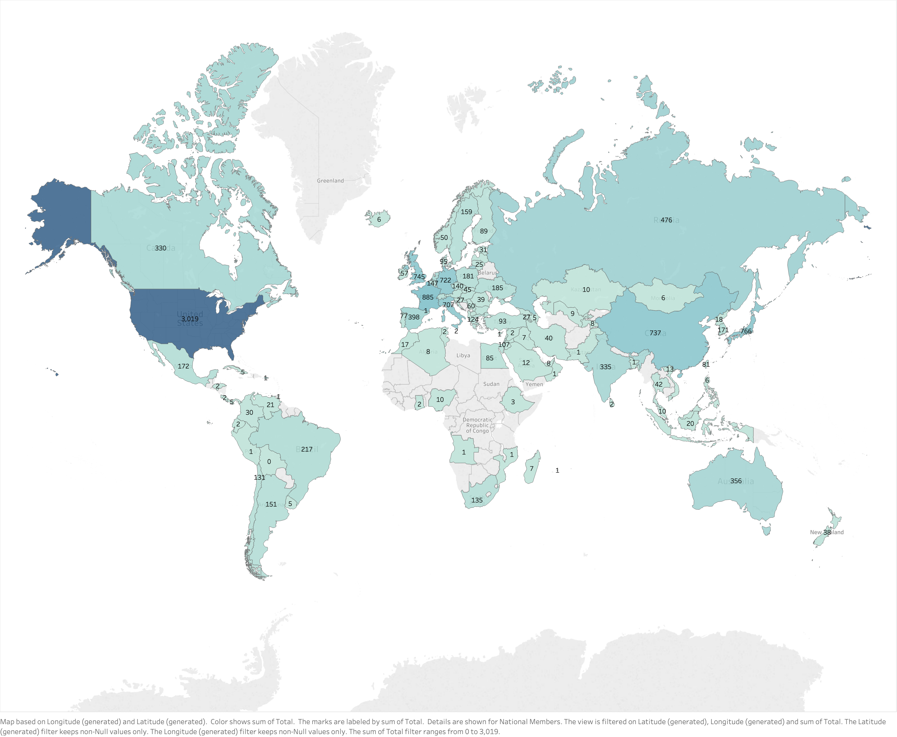
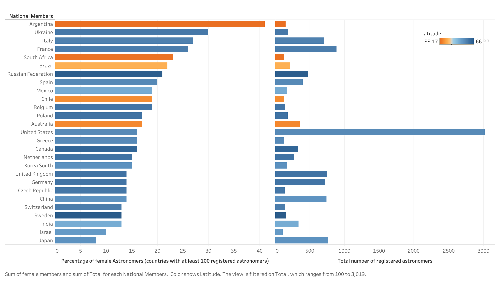

This is a preliminary exploratory analysis combining data visualization
techniques (using open source software - except for Tableau) with databases
freely available online. The data source is the "geographical and gender
distribution of individual members of the IAU" (International Astronomical
Union). See the Reference section below for details.
The first (static) map shows the distribution of registered astronomers per
country in the IAU database, as of September 27th, 2019. Darker colors relate to
larger numbers of astronomers in a given country. Countries with light gray
colors have no data available in the IAU database. Note: I did not filter data
based on the IAU country categories.

The interactive map below uses the same underlying data, but the color scale
relates to the percentage of reported female astronomers. By hovering your mouse
in each country you can find additional information.
The horizontal bars (left side) in the figure below show the percentage of
female astronomers for member countries with at least 100 registered
astronomers. The right side shows the total number of astronomers for each
country listed on the left side. The color scale relates to the latitude (a
proxy for southern and northern hemispheres).

The IAU database also has limited information on the distribution of registered
astronomers by gender and age group (for those members who reported such
information). The last interactive figure below is a stacked vertical bar chart
comparing the percentage of females and males for different age groups, as
defined by the IAU. The detailed information for each group can be accessed
by hovering your mouse on the vertical bars.
This work is for demonstration purposes only and has no relation/affiliation with the
IAU. Any comments or suggestions are greatly appreciated and can be sent
directly via email (vmplacco@gmail.com).